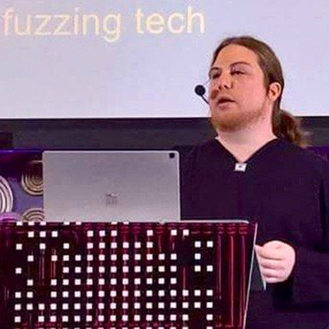

|  |
Richard Johnson is a computer security specialist with a focus on software vulnerability analysis. Currently the Director of Security Research for Oracle Cloud Infrastructure and owner of Fuzzing IO, a research and development company offering professional training services, Richard offers over 15 years of professional expertise and leadership in the information security industry. Current responsibilities include defining and executing on a proactive offensive security research strategy for a world leading cloud infrastructure and development team at Oracle. This work encompasses all parts of the cloud stack including hardware validation on third party components; zeroday research on hypervisors, kernels, and third-party code; and deep dives on the proprietary services offered to end users. Prior to Oracle, Richard lead the security research efforts for the Talos Security Intelligence and Research Group at Cisco Systems, Inc. Previous research endeavors focused on the development of advanced fuzzing and crash analysis technologies facilitating the automation of the vulnerability triage and discovery process. Richard has delivered training and presented annually at top-tier industry conferences worldwide for over a decade and is an invited speaker and trainer at several leading events. Richard was also co-founder of the Uninformed Journal and is on the committee for the USENIX Workshop on Offensive Technologies. |
This class is designed to introduce students to the best tools and technology available for automating vulnerability discovery and crash triage with a focus on delivering a practical approach to applying this technology in real deployments at any scale. Through an applied understanding of introductory program analysis and binary translation, techniques for finding various bug classes and methods for improved crash debugging will be discussed. We will take a deep dive into fuzzing, covering all aspects of this practical approach to finding bugs. As the most approachable and versatile of the available tools, the student will apply various fuzzing techniques to several real-world pieces of software. Students will learn strategies for analyzing attack surface, writing grammars, and generating effective corpus. We will explore in detail the latest innovations such as harnessing code coverage for guided evolutionary fuzzing and symbolic reasoning for concolic fuzzing.
Taint Driven Crash Analysis
Hack In The Box, Beijing, China, October 2018
Evolutionary Kernel Fuzzing
Recon, Montreal, Canada, July 2017
Black Hat, Las Vegas, USA, July 2017
pdf
Harnessing Intel Processor Trace on Windows for Vulnerability Discovery
Hack in the Box, Amsterdam, Netherlands, April 2017
CanSecWest, Vancouver, Canada, March 2017
Recon BRX, Brussels, Belgium, February 2017
Hushcon, Seattle, Washington, December 2016
Countermeasure, Ottowa, Canada, November 2016
Blue Hat, Seattle, Washington, November 2016
Ruxcon, Melbourne, Australia, October 2016
pdf code
Go Speed Tracer
Recon, Montreal, Canada, June 2016
Toorcamp Seattle, Washington, June 2016
Hack In The Box, Amsterdam, Netherlands, May 2016
pdf video (HITB) video (Recon)
High Performance Fuzzing
Hushcon, Seattle, Washington, December 2015
PacSec, Tokyo, Japan, Nov 2015
Ruxcon, Melbourne, Austrlia, October 2015
B-Sides Knoxville, Knoxville, Tennessee, May 2015
InfoSec Southwest, Austin, Texas, April 2015
pdf video
Fuzzing and Patch Analysis - SAGEly Advice
NoSuchCon, Paris, France, November 2014
Hack In The Box, Kuala Lumpur, Malaysia, October 2014
Recon, Montreal, Canada, June 2014
Shakacon, Hawaii, June 2014
pdf video (Recon) video (NoSuchCon)
Taint Nobody Got Time for Crash Analysis
Recon, Montreal, Canada, June 2013
Summercon, New York City, New York, June 2013
NoSuchCon, Paris, France, May 2013
InfoSec Southwest, Austin, Texas, March 2013
pdf
Improving Software Security with Dynamic Binary Instrumentation
SOURCE, Seattle, Washington, June 2011
InfoSec Southwest, Austin, Texas, March 2012
pptx
Razorback Framework
Gigacon, Warsaw, Poland, September 2011
Internet Security Days, Bruehl, Germany, September 2011
pptx
A Castle Made of Sand: Adobe Reader X Sandbox
Hackito Ergo Sum, Paris, France, April 2011 CanSecWest, Vancouver, B.C. Canada, March 2011
pptx (minor update)
Harder, Better, Faster, Stronger: Semi-Auto Vulnerability Research
Blue Hat, Redmond, Washington, October 2010
Black Hat USA, Las Vegas, Nevada, August 2010
slides paper video
Visualizing Software Security
Blue Hat, Redmond, Washington, October 2008
VizSec, Cambridge, Massasschusetts, September 2008
pptx
Fast n Furious Transforms
Toorcon Seattle, Seattle, Washington, April 2008
pdf pptx
AutoHacking with Phoenix Enabled Data Flow Analysis
Toorcon 9, San Diego, California, October 2007
pdf pptx
Logical Fuzzing
VNSECON, Ho Chi Minh, Vietnam, August 2007
pdf pptx
Memory Allocator Attack and Defense
Toorcon Seattle, Seattle, Washington, May 2007
pptx
Windows Vista: Exploitation Countermeasures
EuSecWest, London, England, March 2007
Toorcon 8, San Diego, California, September 2006
ppt
Disassembler Internals II
22nd Chaos Communication Congress, Berlin, Germany, December 2005
pdf codis.tar.gz idastruct.tar.gz codis.png
x86 Disassembler Internals
Toorcon 7, San Diego, California, September 2005
pdf codis.tar.gz codis screenshot
Automated Debugging and Process Analysis
Interz0ne IV, Atlanta, Georgia, March 2005
pdf dltrace-0.5.tar.bz2 dltrace.README
Hooking the Linux ELF Loader
Toorcon 6, San Diego, California, October 2004
pdf md5verify
A Comparison of Buffer Overflow Prevention Implementations and Weaknesses
Black Hat USA, Las Vegas, Nevada, July 2004
Defcon 12, Las Vegas, Nevada, July 2004
pdf avtp.tar.gz avtp.README
Advanced Shellcode Implementations
Interz0ne III, Atlanta, Georgia, April 2004
pdf
{kind=link}